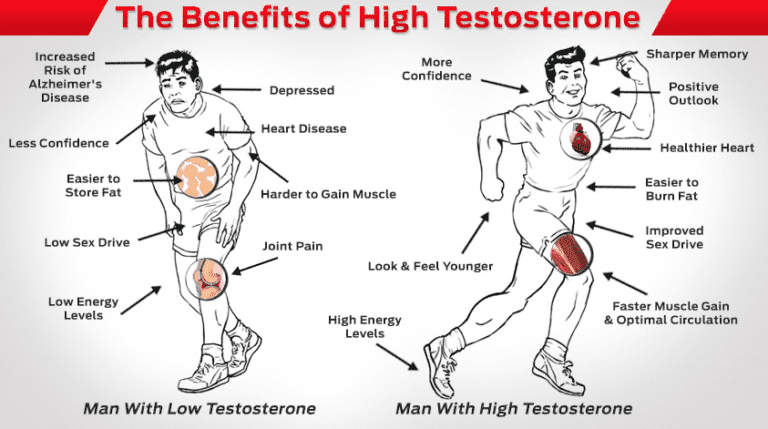
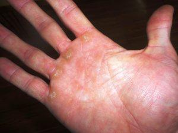

Masturbation. Probably the most common vice of modernity, and the one that almost all neomasculinist websites are concerned with eradicating from the human condition. And why shouldn’t that be the case? After all, the “sin of Onan” has been linked to several legitimate physiological problems.
1. It makes you less receptive to actual sex.
The chemical structure of an endorphin
Despite all the pornography that floods the realms of cyberspace, the current generation has less sex than any generation of the past 100 years. While it’s likely that the proliferation of porn is not the only reason for this (frankly, it’s my opinion that people today, or at least most of the people around me, are just plain unattractive, both physically and emotionally), the fact that doctors are reporting surging numbers of 20 and 30 year old men coming to them with erectile dysfunction would seem to suggest that it is part of the problem.
Further complicating matters is the fact that, according to some research, one is capable of becoming addicted to pornography, with each fap serving as an endorphin “hit” similar to that released by certain types of drugs—a response that, much like drug use, will eventually wear off and require a stronger “hit”.
2. It lowers your testosterone levels

This is probably related to number 1, but it bears repeating: testosterone is good for men. Having a high natural testosterone level has been correlated to many positive health benefits such as increased energy, increased metabolism (which means less adipose tissue), higher sex drive and sexual function, increased muscle mass, increased bone density/lower risk of arthritis, and emotional stability.
Related to this, studies have shown that baseline testosterone levels in the bloodstream steadily increase after the onset of sexual abstinence, peaking at 7-10 days, a point at which they plateau and continue to do so until ejaculation. Knowing the benefits of increased testosterone, why would you waste it?
3. It makes you less attractive to women.

This occurs in ways both macro and micro. The macro, simply put, comes from the fact that, in addition to the frequent masturbator not taking advantage of the physical benefits increased testosterone gives (see number 2), women are just not attracted to buttery soft, womanly hands. In my personal experience, women love to feel the calluses upon a man’s hands, and just one lotion-soaked fap session a week will take away from the sexy, alligator-like roughness of your palms.
Beyond the purely physical, some research indicates that they may be capable of directly sensing pheromone signals related to your hormonal levels, and, of course, react positively to it (that same research indicates that males react with more arousal to women that are in the midst of ovulation)
So knowing all that, you’re probably going to want to quit masturbating as soon as possible, if you haven’t started doing so already. But, of course, it’s not so easy to kick an addiction, as perhaps some of those in the audience might know. So what can you do?
How to kick the habit
It is here that you can utilize the Baumeister willpower training devices (detailed in this link) to a specific affect, rather than just generally training your “willpower” in an ambiguous sense.
Recall that the program does not require you to go cold turkey immediately, as long as you make some sort of progress and concerted effort every day in your goal of kicking your bad habits and establishing good ones.
And speaking from my own experience with kicking the porn habit, I will give you the techniques that I used.
Step 1: Separate yourself from the substance. In other words, delete all your pornography from your hard drive, clear your browsing history so you don’t have the websites anymore. Seems pretty obvious to me that removing the source of your addiction from your presence is the fastest way to get unattached emotionally.
Step 2: Find some other hobbies to fill your time with. “Idle Hands are the devil’s tool” and all. I won’t tell you what activity you should partake in, just make it something constructive.
Step 3: Take it slow. Rather than trying to go cold turkey all at once, go gradually. For example, if you masturbate twice a day, try cutting down to only one a day for a week. And then once you can do that for a couple of weeks, cut down to once every two days. And so forth, as much as you want to reduce it.
If you start now, by the end of the year, you can comfortably wean yourself off the habit, and these techniques work on any other habit as well. Its just masturbation is such a bad vice, it would behoove you to get rid of it first.
Read More: My One Year Of Not Masturbating